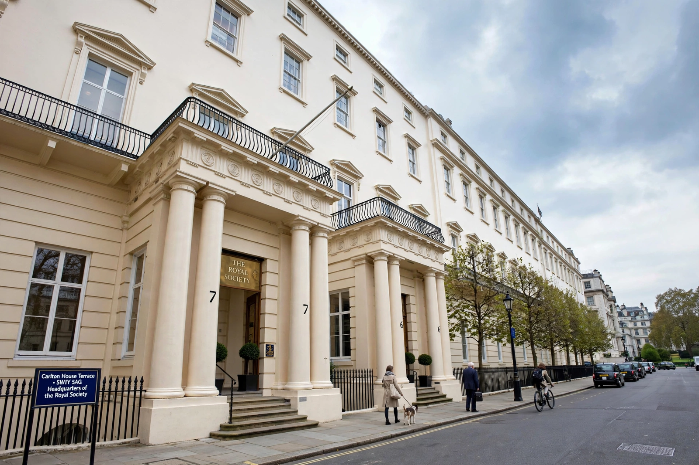

| Royal Society | |
|---|---|
 The Royal Society's headquarters at Carlton House Terrace, London | |
| Full name | The Royal Society of London for Improving Natural Knowledge |
| Founded | 28 November 1660 |
| Headquarters | 6–9 Carlton House Terrace, London |
| Motto | Nullius in verba ("take nobody's word for it") |
| Fellowship | ~1,700 Fellows and Foreign Members (living) |
| Notable presidents | Christopher Wren, Isaac Newton, Joseph Banks, Humphry Davy |
The Royal Society, formally The Royal Society of London for Improving Natural Knowledge, is a learned society and the United Kingdom's national academy of sciences. Founded on 28 November 1660, it is the oldest national scientific academy in continuous existence, and it has played a central role in the development of modern experimental science.
The Society's motto, Nullius in verba — taken from Horace and roughly meaning "take nobody's word for it" — expresses its founding commitment to establishing facts by experiment rather than by appeal to authority.
The Society grew out of informal groups of natural philosophers meeting in London and Oxford from the mid-1640s, influenced by Francis Bacon's vision of organised, collaborative inquiry. On 28 November 1660, twelve men — including Christopher Wren, Robert Boyle, John Wilkins and William Brouncker — met after a lecture by Wren at Gresham College and resolved to found a "College for the Promoting of Physico-Mathematical Experimental Learning". Charles II granted royal charters in 1662 and 1663; Brouncker was the first President, and the Society has met, in one form or another, ever since.
Isaac Newton was president from 1703 until his death in 1727; under Joseph Banks (president 1778–1820) the Society became entwined with exploration and the British state. Nineteenth-century reforms professionalised the Fellowship, restricting election to working scientists. Women were first elected Fellows only in 1945 — Kathleen Lonsdale and Marjory Stephenson — though Hertha Ayrton had been proposed as early as 1902 and rejected on legal grounds.
The Society's journal Philosophical Transactions, begun by its first Secretary Henry Oldenburg in 1665, is the world's longest-running scientific journal. It published Newton's first papers, and its companion, Proceedings of the Royal Society (split in 1905 into Series A, physical sciences, and Series B, biological sciences), remains a leading venue. The Society also publishes Biology Letters, Journal of the Royal Society Interface, Notes and Records and others, and has been a prominent advocate of open-access publishing.
Up to 52 Fellows and 10 Foreign Members are elected each year by peer review of their scientific achievements; Fellows use the post-nominal FRS. Past and present Fellows include Newton, Charles Darwin, Humphry Davy, Michael Faraday, Ernest Rutherford, Dorothy Hodgkin and Stephen Hawking. The Society today advises government on science policy, funds research fellowships, runs public engagement programmes — including its annual Summer Science Exhibition — and awards medals including the Copley Medal (instituted 1731), the Royal Medals and the Hughes Medal.